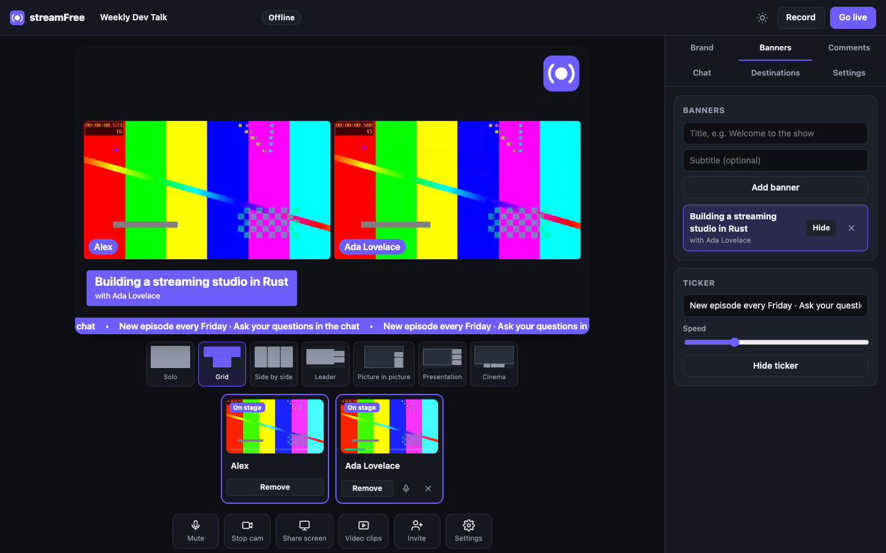

Lo studio di live streaming gratuito che gira sul tuo computer The free live-streaming studio that runs on your computer
Invita ospiti con un link, trasmetti ovunque, registra tutto. YouTube, Twitch, Facebook e qualsiasi server RTMP insieme, con il tuo logo e i tuoi banner. Nessun account, nessun abbonamento, nessun watermark. Invite guests from a link, stream everywhere, record everything. YouTube, Twitch, Facebook and any RTMP server at once, with your logo and banners. No account, no subscription, no watermark.
Gratis per sempre · MIT · nessuna telemetriaFree forever · MIT · no telemetry
Un'app vera, con la sua finestra. Installi, apri, sei in onda. Gli ospiti non installano niente: entrano dal browser. A real app with its own window. Install, open, you're on air. Guests install nothing: they join from their browser.
macOS 11 o successivo. Apri il .dmg e trascina streamFree in Applicazioni.macOS 11 or later. Open the .dmg and drag streamFree into Applications.
Scarica per Apple SiliconDownload for Apple siliconWindows 10 e 11, 64 bit. Installer per utente, senza permessi di amministratore.Windows 10 and 11, 64-bit. Per-user installer, no administrator rights.
Scarica l'installer (.exe)Download the installer (.exe)x86-64 e ARM64. Lo studio si apre in una finestra di Chrome, Edge o Brave.x86-64 and ARM64. The studio opens in a Chrome, Edge or Brave window.
Scarica per x86-64Download for x86-64Tutte le versioni e i checksumAll versions and checksums
Scarica l'ultima versione, ne verifica il checksum SHA-256 e aggiunge l'app al sistema. Niente sudo.Downloads the latest version, checks its SHA-256 checksum and adds the app to your system. No sudo.
curl -fsSL https://raw.githubusercontent.com/iamvinbas/streamFree/main/install.sh | shirm https://raw.githubusercontent.com/iamvinbas/streamFree/main/install.ps1 | iexAnteprima del programma, layout, persone in scena, banner e destinazioni: tutto a portata di clic.Program preview, layouts, people on stage, banners and destinations: all one click away.

Il tuo computer è la regia. Niente server di terzi in mezzo: i video degli ospiti arrivano a te, il tuo stream parte da te.Your computer is the control room. No third-party servers in between: guests' video comes to you, and your stream leaves from you.
Lo studio si apre nella sua finestra, con la tua fotocamera già pronta.The studio opens in its own window, camera ready.
Mandi un link: entrano nel backstage e li porti in scena quando vuoi.Send a link: they wait backstage until you bring them on stage.
Incolla le chiavi di YouTube, Twitch o di qualsiasi server RTMP. Restano sul tuo computer.Paste keys for YouTube, Twitch or any RTMP server. They stay on your computer.
Un clic: trasmetti ovunque insieme e registri in MP4.One click: stream everywhere at once and record to MP4.
Le funzioni degli studi online in abbonamento, senza abbonamento e senza cloud.What subscription studios offer, without the subscription or the cloud.
Fino a 16 ospiti dal browser, con backstage, chat privata e audio senza eco per ciascuno.Up to 16 guests from their browser, with a backstage, private chat and echo-free audio for each.
Tutte le destinazioni che la tua connessione regge. Ognuna si riconnette da sola e una lenta non rallenta le altre.As many destinations as your upload allows. Each reconnects on its own, and a slow one never holds the others back.
MP4 scritto a frammenti: anche se il computer si spegne, il file resta riproducibile.MP4 written in fragments: even if the computer dies, the file still plays.
Logo, overlay a tutto schermo, sfondi, colori e stili delle targhette con i nomi.Logo, full-screen overlays, backgrounds, colours and name-tag styles.
Prepara i sottopancia prima della diretta e mostrali con un clic; testo scorrevole in basso.Prepare lower thirds before the show and show them with one click; scrolling ticker.
Leggi la chat di Twitch e metti in onda un commento con un clic, o aggiungi domande a mano.Read Twitch chat and put a comment on air with one click, or add questions by hand.
Condividi lo schermo con il suo audio e manda intro, outro e clip a tutto schermo.Share your screen with its audio and play intros, outros and clips full screen.
Singolo, griglia, affiancati, leader, picture in picture, presentazione, cinema.Solo, grid, side by side, leader, picture in picture, presentation, cinema.
Nessun account e nessuna telemetria. Le chiavi di stream non lasciano mai il tuo computer.No account and no telemetry. Stream keys never leave your computer.
Rispetto a uno studio online in abbonamento.Compared with a subscription browser studio.
| streamFree | StreamYard* | |
|---|---|---|
| PrezzoPrice | Gratis, per sempreFree, forever | Gratis con limiti · da $44,99/meseFree with limits · from $44.99/month |
| Account | Non serveNot needed | ObbligatorioRequired |
| Watermark | ✓ MaiNever | Logo sul piano gratuitoLogo on the free plan |
| Destinazioni insiemeDestinations at once | IllimitateUnlimited | 3–8 nei piani a pagamento3–8 on paid plans |
| Persone in scenaPeople on screen | Fino a 16 ospitiUp to 16 guests | 6 (gratis) · 10 (a pagamento)6 (free) · 10 (paid) |
| Registrazione localeLocal recording | IllimitataUnlimited | 2 ore/mese sul piano gratuito2 hours/month on the free plan |
| Dove passano i tuoi videoWhere your video goes | Dal tuo computer alle piattaformeFrom your computer to the platforms | Attraverso il cloud del fornitoreThrough the vendor's cloud |
| Codice sorgenteSource code | ✓ Aperto (MIT)Open (MIT) | ✗ ChiusoClosed |
* Dalla pagina prezzi pubblica di StreamYard, ottobre 2026. StreamYard è un marchio del rispettivo proprietario; streamFree non è affiliato. * From StreamYard's public pricing page, October 2026. StreamYard is a trademark of its owner; streamFree is not affiliated.
Sì. streamFree è open source con licenza MIT: niente piani a pagamento, limiti di tempo o watermark.Yes. streamFree is open source under the MIT license: no paid plans, time limits or watermark.
No: aprono il link di invito nel browser. Per ospiti sulla tua rete avvia streamFree con streamfree --app --lan; per ospiti da internet con streamfree --app --tunnel (serve cloudflared).No: they open the invite link in their browser. For guests on your network start streamFree with streamfree --app --lan; for guests on the internet with streamfree --app --tunnel (needs cloudflared).
Qualsiasi servizio che accetta RTMP o RTMPS: YouTube, Twitch, Facebook, LinkedIn, Kick, X o il tuo server. Anche tutte insieme.Any service that accepts RTMP or RTMPS: YouTube, Twitch, Facebook, LinkedIn, Kick, X or your own server. All at once, too.
L'app non è ancora notarizzata da Apple. La prima volta fai clic destro sull'app → Apri, oppure Impostazioni di Sistema → Privacy e sicurezza → Apri comunque. L'installazione con il comando evita il passaggio.The app is not notarized by Apple yet. The first time, right-click the app → Open, or System Settings → Privacy & Security → Open Anyway. Installing with the command avoids this step.
Nella cartella Filmati/streamFree su macOS e Video/streamFree su Windows e Linux. Dalla finestra di fine registrazione puoi aprirla con un clic.In Movies/streamFree on macOS and Videos/streamFree on Windows and Linux. The end-of-recording dialog opens it with one click.
Restano sul tuo computer. streamFree non ha server suoi e non raccoglie statistiche: i video vanno solo dove scegli tu.They stay on your computer. streamFree has no servers of its own and collects no statistics: video only goes where you send it.